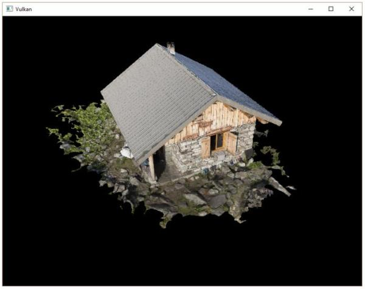

载入顶点和索引
现在我们从模型文件加载顶点数据和索引数据，删除之前我们定义的vertices和indices这两个全局变量，使用大小可变的向量来重新定义它们：
std::vector<Vertex> vertices;
std::vector<uint32_t> indices;
VkBuffer vertexBuffer;
VkDeviceMemory vertexBufferMemory;
由于我们使用的模型包含的顶点个数远远大于65535，所以不能使用uint16_t作为索引的数据类型，而应该使用uint32_t作为索引的数据类型。更改索引数据类型后，还要修改我们调用vkCmdBindIndexBuffer函数时使用的参数：
vkCmdBindIndexBuffer(commandBuffers[i], indexBuffer, 0, VK_INDEX_TYPE_UINT32);
tinyobjloader库的使用和STB库类似，我们需要定义TINYOBJLOADER_IMPLEMENTATION宏来让它包含函数实现，不然就会在编译时出现链接错误：
#define TINYOBJLOADER_IMPLEMENTATION
#include <tiny_obj_loader.h>
现在编写用于载入模型文件的loadModel函数，它负责填充模型数据到vertices和indices。我们在顶点缓冲和索引缓冲创建之前调用它来载入模型数据：
void initVulkan() {
...
loadModel();
createVertexBuffer();
createIndexBuffer();
...
}
...
void loadModel() {
}
模型数据的载入是通过调用tinyobj::LoadObj完成的：
void loadModel() {
tinyobj::attrib_t attrib;
std::vector<tinyobj::shape_t> shapes;
std::vector<tinyobj::material_t> materials;
std::string err;
if (!tinyobj::LoadObj(&attrib, &shapes, &materials, &err, MODEL_PATH.c_str())) {
throw std::runtime_error(err);
}
}
一个OBJ模型文件包含了模型的位置、法线、纹理坐标和表面数据。表面数据包含了构成表面的多个顶点数据的索引。
我们在loadModel函数中使用attrib变量来存储载入的位置、法线和纹理坐标数据。使用shapes变量存储独立的对象和它们的表面数据。每个表面数据包含了一个顶点数组，顶点数组中的每个顶点数据包含了顶点的位置索引、法线索引和纹理坐标索引。OBJ模型文件格式允许为模型的每个表面定义材质和纹理数据，但在这里，我们没有用到。
我们使用err变量来存储载入模型文件时产生的错误和警告信息，比如载入时没有找到引用的材质信息。如果载入模型文件失败，那么tinyobj::LoadObj函数就会返回false。之前提到，OBJ模型文件中的表面数据可以包含任意数量的顶点数据，但我们的程序只能渲染三角形表面，这就需要进行转换将OBJ模型文件中的表面数据都转换为三角形表面。tinyobj::LoadObj函数有一个可选的默认参数，可以设置在加载OBJ模型数据时将表面数据转换为三角形表面。由于这一设置是默认的，所以，我们不需要自己设置它。
接着，我们将加载的表面数据复制到我们的vertices和indices向量中，这只需要遍历shapes向量即可：
for (const auto& shape : shapes) {
}
载入的表面数据已经被三角形化，所以我们可以直接将它们复制到vertices向量中：
for (const auto& shape : shapes) {
for (const auto& index : shape.mesh.indices) {
Vertex vertex = {};
vertices.push_back(vertex);
indices.push_back(indices.size());
}
}
为了简化indices数组的处理，我们这里假定每个顶点都是独一无二的，可以直接使用indices数组的当前大小作为顶点索引数据。上面代码中的index变量的类型为tinyobj::index_t，这一类型的变量包含了vertex_index、normal_index和texcoord_index三个成员变量。我们使用这三个成员变量来检索存储在attrib数组变量中的顶点数据：
vertex.pos = {
attrib.vertices[3 * index.vertex_index + 0],
attrib.vertices[3 * index.vertex_index + 1],
attrib.vertices[3 * index.vertex_index + 2]
};
vertex.texCoord = {
attrib.texcoords[2 * index.texcoord_index + 0],
attrib.texcoords[2 * index.texcoord_index + 1]
};
vertex.color = {1.0f, 1.0f, 1.0f};
attrib.vertices是一个浮点数组，并非glm::vec3数组，我们需要在使用索引检索顶点数据时首先要把索引值乘以3才能得到正确的顶点数据位置。对于纹理坐标数据，则乘以2进行检索。对于顶点位置数据，偏移值0对应X坐标，偏移值1对应Y坐标，偏移值2对应Z坐标。对于纹理坐标数据，偏移值0对应U坐标，偏移值1对应V坐标。
现在使用优化模式编译我们的程序(使用Visual Studio的Release模式或GCC的-O3编译选项)。这样做可以提高我们的模型加载速度。运行程序，应该可以看到下面这样的画面：

看起来，模型的几何形状是正确的，但纹理映射不对。这是因为Vulkan的纹理坐标的原点是左上角，而OBJ模型文件格式假设纹理坐标原点是左下角。我们可以通过反转纹理的Y坐标解决这一问题：
vertex.texCoord = {
attrib.texcoords[2 * index.texcoord_index + 0], 1.0f - attrib.texcoords[2 * index.texcoord_index + 1]
};
现在再次编译运行程序，就可以看到被正确映射纹理的模型了：
